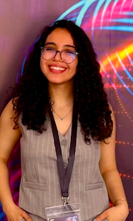

MSc Student in Data Science & Intelligent Systems. Currently focusing on 3D Computer Vision, Deep Learning pipelines, and Graph Intelligence for complex engineering applications.
I am a Master's student at the Faculty of Sciences and Technology (FST Fez), specializing in Data Science and Intelligent Systems. My work lies at the intersection of Machine Learning, 3D Computer Vision, and structured Data Systems.
Currently, my research focuses on multi-view image processing and 3D CAD reconstruction tailored for industrial manufacturing workflows.
Core Technical Stack:

Key areas of planned exploration for upcoming research mobility:
Investigating generative latent space representations to infer unseen or occluded internal geometry in 3D reconstruction.
Fine-tuning domain-specific LLMs for automated technical document summarization and bias detection in textual datasets.
Analyzing deep learning model vulnerabilities against adversarial perturbations in industrial diagnostic vision systems.
I am actively seeking research opportunities and academic collaborations in Machine Learning, Computer Vision, and Data Science.